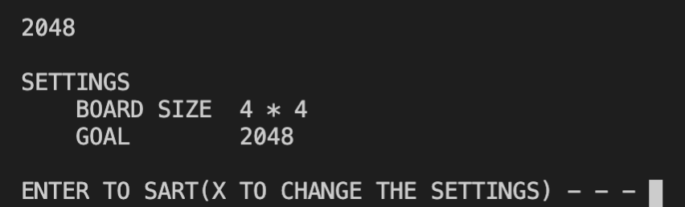

Stage 6 ゲーム進行を実装する
6-2 スタートメニューを実装する
とりあえず 6-1 で初期設定の変更はカタがつきました。ただ現状設定画面しか作っていないので、設定画面にアクセスする画面をデザインしなければなりませんし、そもそも設定画面にアクセスせずにゲームに入れるようにもしないといけません。

まあ大体の場合は設定変更しないもんな
そこで、スタートメニューを作ってデフォルトのサイズ・ゴールをみてもらい、問題なければゲーム開始、変更したければ 6-1 で作った settings('x') を発動する。こんな形にしてみましょう。
では最初にコードから。
def startmenu():
command = input('''
2048
SETTINGS
BOARD SIZE {} * {}
GOAL {}
ENTER TO SART(X TO CHANGE THE SETTINGS) - - - '''.format(parameters['size'],parameters['size'],parameters['goal']))
settings(command)
なんだ〜、簡単じゃない
でしょう？だから解説いらないよね？
は？仕事しろよ
仕方ありませんね。
~~~~~~~~~~~~~~~
今回作る画面はこんな感じです。
盤面の大きさとゴールの値を提示しておいて、そのあとコマンドを入力してもらおうという形です。
def startmenu():
command = input('''
2048
SETTINGS
BOARD SIZE {} * {}
GOAL {}
ENTER TO SART(X TO CHANGE THE SETTINGS) - - - '''.format(parameters['size'],parameters['size'],parameters['goal']))
settings(command)
この長い一文が command に代入するための input の文になってるわけか
コマンドはもれなく settings の引数になりますが、'X' でなければ settings の中では何も起こさず出てきますからご心配なく。
設定なんか変更しないで速攻でゲームを開始するには X でさえなければなんでもいいので、ここでは「エンターキーを押すだけで構わない」としています。